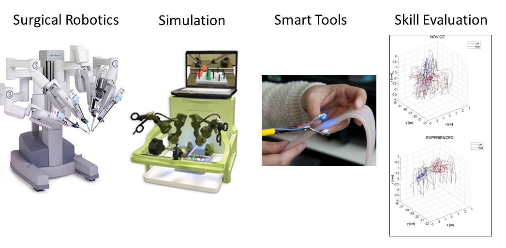

Bioprinting
3D printing directly onto unpredictably moving human anatomy — printing a skin graft onto a patient without limiting their range of motion.
We fuse signal processing, controls, cyber-physical systems, and pervasive instrumentation with applications in next-generation surgical robotics, medical devices, simulation, and healthcare management.
The Medical Robotics and Devices Lab at the University of Minnesota, led by Dr. Timothy M. Kowalewski.
The ongoing incursion of novel technology into the operating room and health clinic means that surgical tools and medical devices now generate vast streams of data — and bring significant learning challenges to the practitioners who use them.
Our goal is to advance the emerging field of computational surgery: the fusion of signal processing, controls, cyber-physical systems, and pervasive instrumentation, applied to next-generation surgical robotics, medical devices, simulation, healthcare management, and related technology.
We are a hands-on group. Our work spans soft robotic catheters and 3D bioprinting onto moving anatomy, through tissue-sensing graspers and data-driven measures of surgical skill. Students here build hardware, write the control and learning algorithms that drive it, and validate it against real clinical problems.
Sensorized surgical tools that recognize what tissue they are touching — and how hard they are squeezing it.
Inverse-designed soft catheter robots fitted to a patient's own anatomy from CT.
Automated, task-independent evaluation of technical surgical skill from tool-motion data.
Printing living tissue directly onto unpredictably moving human anatomy.
Four threads that run through nearly everything we build.

Six active lines of research in the lab right now.
3D printing directly onto unpredictably moving human anatomy — printing a skin graft onto a patient without limiting their range of motion.
A mathematical framework for the inverse design of universal soft robots with exceptional force and power densities.
Intelligent surgical robots that blend control inputs from both the robot and the surgeon.
Automated skill measures that work regardless of which training task the tools are performing.
A laparoscopic grasper with force and displacement sensing that recognizes tissue in real time.
Building a database of in-vivo human tissue properties for the next generation of surgical simulators.
We welcome inquiries from prospective graduate students, undergraduates looking for research experience, and potential collaborators.
timk@umn.edu